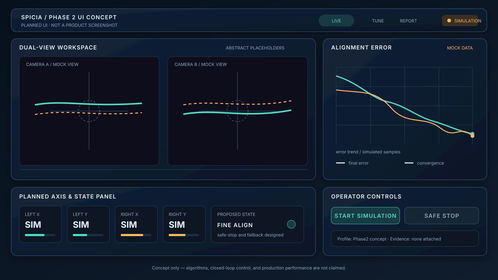

Embedded foundations
STM32, C/C++, FreeRTOS, DMA, sensor drivers, USB, Ethernet, storage, serial buses, and board bring-up.
Embedded systems · Industrial engineering · Hefei, China
From hardware bring-up and STM32/Linux foundations to algorithms, application integration, HIL/SIL, and evidence-backed delivery.
01 / CAPABILITIES
The technologies change by project. The engineering discipline stays the same: observable interfaces, measurable behavior, and reviewable evidence.
STM32, C/C++, FreeRTOS, DMA, sensor drivers, USB, Ethernet, storage, serial buses, and board bring-up.
Sensor fusion, attitude estimation, calibration, fault handling, signal and protocol analysis, and verification-oriented algorithm development.
Linux camera bring-up, services, device integration, diagnostics, product UI architecture, configuration, and observability.
HIL, SIL, digital twins, protocol analysis, synchronized captures, automated regression, failure reproduction, and evidence packages.
02 / SELECTED WORK
Each public repository is scoped to show what was built, how it was verified, and where the current evidence stops.
A full-stack flight-control engineering portfolio: MCU foundations, multi-sensor drivers, FreeRTOS services, estimation research, HIL/SIL, replay, digital twin, and failure-to-fix evidence.
View repository ↗An STM32F407 + UM982 reference system combining isolated power, dual RS-422, RTCM streaming, persistent configuration, diagnostics, and real bench verification.
View repository ↗A human-reviewed AI-assisted delivery loop for embedded teams: build, flash, test, diagnose, package evidence, and hand off. dpiny is the real-hardware proof case.
View repository ↗Completed Linux camera/platform bring-up and diagnostics, plus an original Phase2 UI and modular architecture concept. Vision algorithms, motion control, and closed-loop performance remain planned and are not claimed.

An isolated transparent hardware bridge plus browser analyzer, generic logic-capture import, frame consistency testing, timing analysis, and a planned hardware-versus-MCU benchmark.
View repository ↗03 / METHOD
Requirements, interfaces, risks, and acceptance boundaries.
Hardware, firmware, algorithms, and host tooling as one system.
Signals, timing, state, performance, and failure behavior.
Replay, HIL/SIL, regression, and reproducible evidence.
Document the result, limitations, and next decision clearly.
AI increases throughput. Measurements, source review, reproducible tests, and human judgment remain the acceptance boundary.
04 / CONTACT
Based in Hefei, Anhui, China. Open to conversations about embedded systems, industrial equipment, verification engineering, and engineering automation.